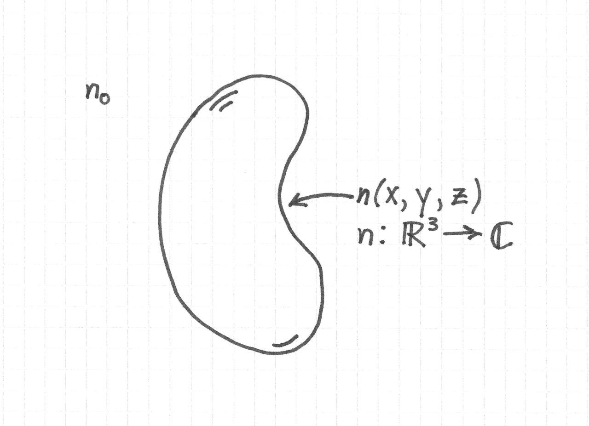
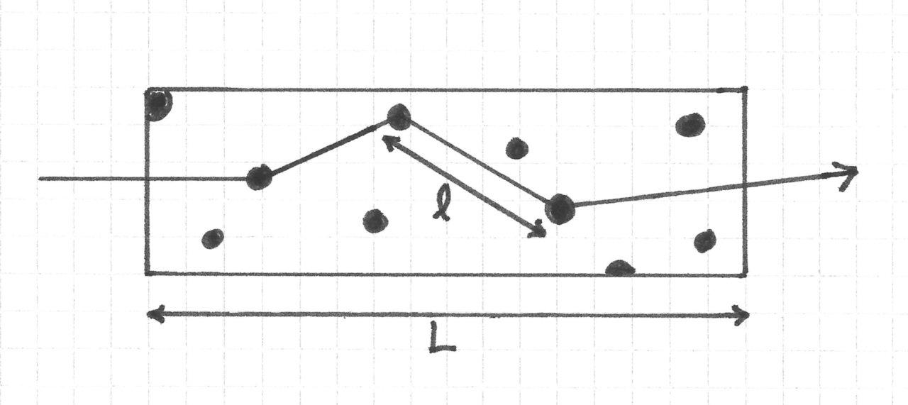
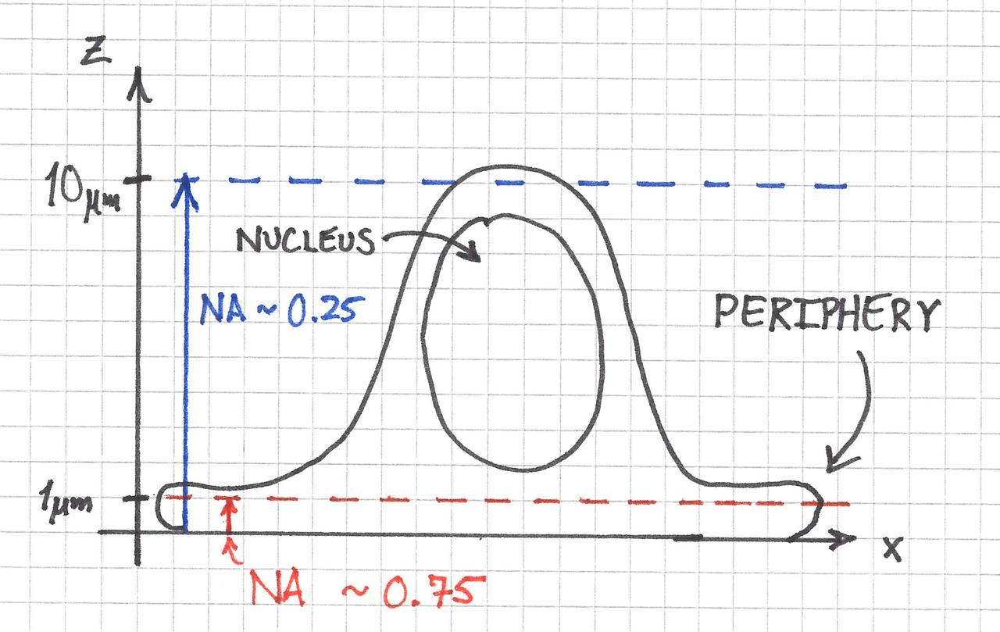
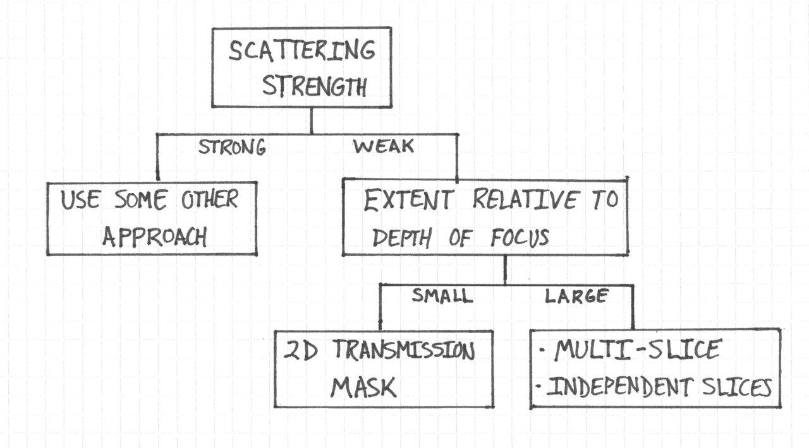

Image Formation in brightfield Microscopy: Part 1
The mathematical model of image formation of a thick, transilluminated object by a microscope is complicated yet incredibly interesting. It draws from diverse areas such as crystallography, light scattering, and the theory of partial coherence. I find it much more complicated, but yet more satisfying, than the image formation models of fluorescence microscopy.
This is the first in a series of posts in which I discuss the theory of image formation of a 3D object in brightfield microscopy. The series is inspired by the classic 1985 paper Three-dimensional imaging by a microscope by N. Streibl, but includes a few digressions that I think help to understand subtleties in the theory.
The Problem
The problem is simple: we would like a model that predicts (as much as is possible) the image of a microscopic object that is captured by a brightfield microscope.
Note that this is slightly different from the problem of recovering the object, which cannot be done with complete fidelity in brightfield microscopy.
What is the Object Model?
In the theory, the microscopic object, such as a cell or microorganism, is modeled as a complex-valued, three-dimensional function \( n \) of spatial coordinates x, y, and z.

\( n \) is of course the refractive index of the object. The volume outside the object is a uniform medium of refractive index \( n_0 \).
\( n \) is complex to account for
- phase shifts imparted onto the light, and
- absorption, which is related to the imaginary part of the refrative index.
Model Classification by Scattering Strength, Object Extent, Depth of Focus
The general model of brightfield image formation is too complex to be of any real use for practical work. As a result, we need to make simplifications to make the theory manageable.
I think that the most useful way to understand these simplifications is by specifying three quantities:
- The strength of light scattering by the object
- The object's axial extent
- The depth of focus of the microscope
We will also need to consider properties such as the coherence of the light source, but I will leave this for a later discussion.
The Scattering Strength and the Object's Axial Extent
The degree of light scattering by an object is the most important characteristic in determining the modeling approach because there is little hope in high-fidelity imaging of strongly scattering samples. (Think of trying to see a distant object in a thick fog1.)
Roughly speaking, the scattering strength of an object depends on the degree of refractive index variations within the object and the object's extent. All else being equal, a stronger variation of the refractive index within the object leads to stronger scattering. And as the object becomes larger, a larger fraction of the energy carried by the light is scattered as well because light spends more time inside the object.
One simple heuristic for the scattering strength is the mean free path of a photon, \( \ell \) inside the object. This is the average distance a photon travels before being scattered. The ratio of \( \ell \) to an object's extent \( L \) is therefore an indication of how many times a photon is likely to scatter.

For weakly scattering objects,
$$ \frac{\ell}{L} \ll 1 $$
I say that this is a heuristic because there are a few problems with this explanation. Namely,
- As far as I am aware, there isn't a clear relationship between \( ell \) and the gradient of the refractive index.
- The mean free path makes sense only if light is modeled as discrete, point-like objects traveling ballistically through the sample, occasionally scattering off of other point-like objects. This is an obvious over-simplification that doesn't reflect the wave nature of light.
Additionally, if the ratio \( \ell / L \) is much less than one, the above picture suggests that light will not interact with the sample at all, but it can still very much diffract.
We'll be dealing with waves and not photons from this point onward, so if you're already experiencing some cognitive dissonance this is part of the reason. Still, this model does help one think about scattering strength without resorting to deeper and much more complicated mathematics, such as the Born approximation and Banach's fixed point theorem.
The Depth of Focus
The depth of focus of the microscope is also important for determining the modeling approach.
Consider the following ratio between the object's axial extent and the microscope's depth of focus, or
$$ \frac{L}{\text{DOF}} $$
The depth of focus is the axial range within which an object appears in focus. When the ratio is significantly less than 1, the object fits entirely within the depth of focus and appears to be effectively two dimensional. When it is about 1 or greater, some sections of the object will appear in focus whereas others will be out-of-focus. The light originating from out-of-focus sections will contribute a nonzero background to the image of the in focus section.
There is no hard cutoff value for this ratio that I am aware of that determines when an object is 2D or 3D. Most likely it is more like a continuum where models that assume 2D objects become continuously less accurate as the value of the ratio increases.
In terms of microscope optics, the depth of focus (also confusingly called the depth of field) depends, among other things, on the numerical aperture (NA) of the objective. A higher NA leads to a smaller depth of focus.
An interesting situation arises when the thickness of an object, such as a cell, varies considerably across its cross section. As illustrated below, a cell might be approximately 2D everywhere when imaged with a 0.25 NA objective, which has an approximately \( 10 \, \mu m \) depth of focus. On the otherhand, only the contents within its periphery would be 2D with a 0.75 NA objective possessing a \( 1 \, \mu m \) depth of focus. Significant portions of the nucleus would be out-of-focus.

Object Modeling Approaches
So what are the modeling approaches for the object? I came up with the following decision tree to help explain the process of choosing one, which is further described below.

Strongly Scattering Objects
This is the easiest case. We're probably not going to be doing microscopy for such samples, so we don't even try to model it.
There are other techniques for studying multiply scattering samples, but they are outside the scope of this discussion.
Weakly Scattering Objects
Here we need to know whether the object is larger or smaller than the microscope depth of focus.
Objects Smaller than the Depth of Focus
If the object is smaller than the depth of focus, we can model the sample as a complex 2D transmission mask:
$$ t( x, y) \approx e^{ j k_0 \int \left[ n( x, y, z) - n_0 \right] \, dz } $$
where \( k_0 \) is the free space wavenumber and \( n_0 \) is the refractive index of medium surrounding the object.
This approach effectively projects the small refractive index differences along the z-direction onto a plane. It can be derived from the Helmholtz equation by ignorning transverse gradients of the field's amplitude and approximating the refractive index term, which is quadratic, as a linear function in \( n \).
Objects Larger than the Depth of Focus
One approach to this case is to divide the sample into thin, independent slices. Each slice is modeled as previously described. The final image is obtained by propagating the field from each slice with various degrees of defocus to the image plane.
IMAGE: thin independent slices
Of course, the slices are really only independent if the scattering is extremely weak. If this is not the case, we could use multi-slice modeling. In this approach, the sample is again divided into thin sequential slices. The difference is that the light diffracted from the first plane serves as the input to the second plane, which diffracts and serves as the input to the third plane, and so on.
IMAGE: multi-slice modeling
Moderately Scattering Samples
I think things get really interesting here, but likely this is best left for later as I don't fully know what options are available.
I will however say that microscopy approaches with optical sectioning, such as confocal and lightsheet, might be of some use.
In the next post I plan on discussing a concept that determines the resolving power of a 3D object under a microscope: the 3D aperture.
-
I think a better analogy would be imaging the 3D structure of the body with infrared light because it is the body itself that scatters the light, unlike fog which only obscures the object that we really care about. This example is more technical and has other difficulties, though, so I think the fog analogy is sufficient. ↩
Comments
Comments powered by Disqus